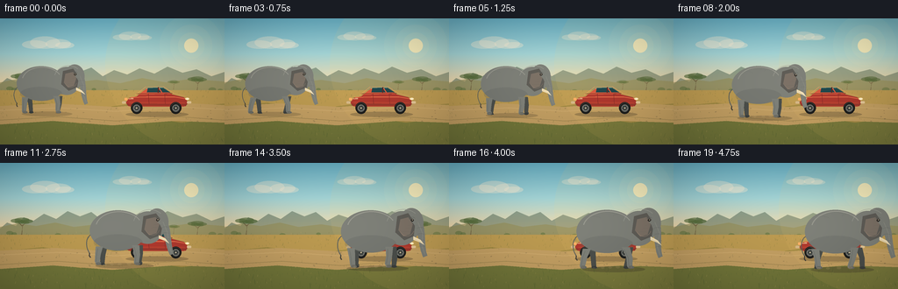
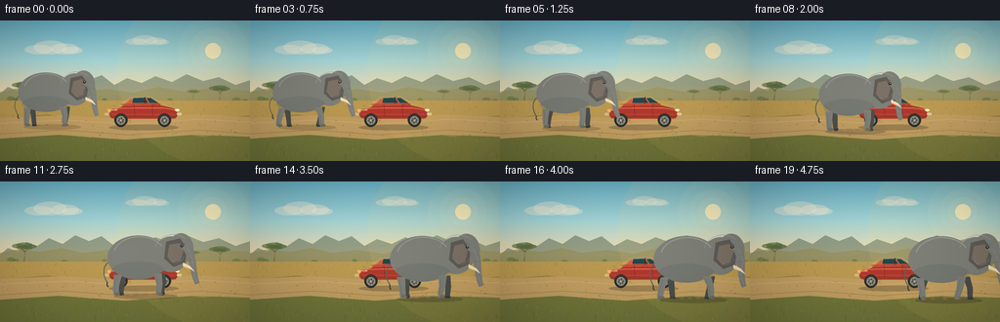
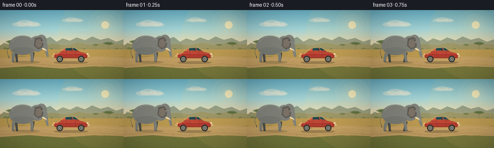
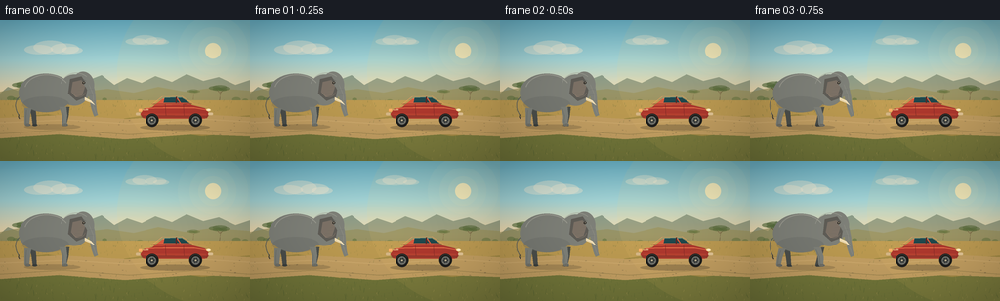
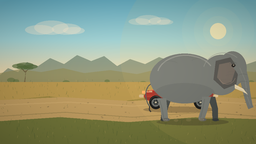
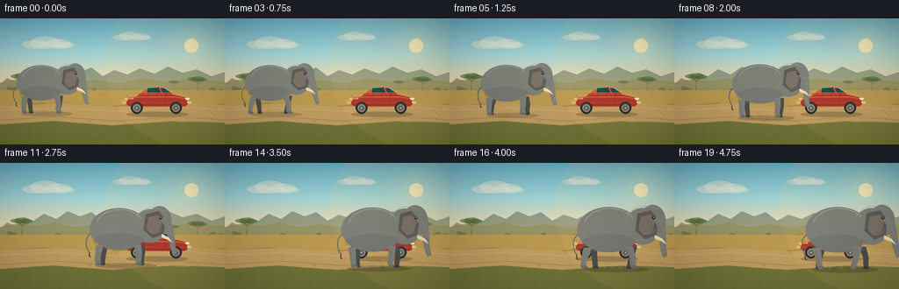

CODING AGENTS AS PIXEL WORLD MODELS
traex/DeepSeek-V4.1-Flash · dynamic_spatial_relationship_0066
点击播放 · 原生 RGB 像素
逐轮保存的候选
回放视频、检查图与代码变化。
每份候选均可单独播放。实际图片检查记录在下方工具轨迹中。
候选 01播放与检查图
点击播放 · 原生 RGB 像素

展开代码变化
--- 上一保存版本
+++ 本次保存版本
@@ -0,0 +1,777 @@
+from __future__ import annotations
+
+import math
+import random
+from pathlib import Path
+
+import numpy as np
+from PIL import Image, ImageDraw, ImageFilter
+
+import artifact_io
+
+
+W, H = 256, 144
+SS = 4
+RW, RH = W * SS, H * SS
+N_FRAMES = 20
+FPS = 4.0
+SEED = 27
+CASE_DIR = Path(__file__).resolve().parent
+
+
+def sx(value: float) -> int:
+ return int(round(value * SS))
+
+
+def pt(x: float, y: float) -> tuple[int, int]:
+ return sx(x), sx(y)
+
+
+def box(x0: float, y0: float, x1: float, y1: float) -> tuple[int, int, int, int]:
+ return sx(x0), sx(y0), sx(x1), sx(y1)
+
+
+def lerp(a: float, b: float, t: float) -> float:
+ return a + (b - a) * t
+
+
+def smoothstep(t: float) -> float:
+ t = max(0.0, min(1.0, t))
+ return t * t * (3.0 - 2.0 * t)
+
+
+def ease_in_out(t: float) -> float:
+ t = max(0.0, min(1.0, t))
+ return 0.5 - 0.5 * math.cos(math.pi * t)
+
+
+def rgba(color: tuple[int, int, int], alpha: int = 255) -> tuple[int, int, int, int]:
+ return color[0], color[1], color[2], alpha
+
+
+def mix(
+ a: tuple[int, int, int], b: tuple[int, int, int], t: float
+) -> tuple[int, int, int]:
+ return tuple(int(round(lerp(a[i], b[i], t))) for i in range(3))
+
+
+def bezier(
+ p0: tuple[float, float],
+ p1: tuple[float, float],
+ p2: tuple[float, float],
+ p3: tuple[float, float],
+ count: int = 28,
+) -> list[tuple[float, float]]:
+ points = []
+ for i in range(count + 1):
+ t = i / count
+ u = 1.0 - t
+ x = u**3 * p0[0] + 3 * u * u * t * p1[0] + 3 * u * t * t * p2[0] + t**3 * p3[0]
+ y = u**3 * p0[1] + 3 * u * u * t * p1[1] + 3 * u * t * t * p2[1] + t**3 * p3[1]
+ points.append((x, y))
+ return points
+
+
+def tapered_curve(
+ p0: tuple[float, float],
+ p1: tuple[float, float],
+ p2: tuple[float, float],
+ p3: tuple[float, float],
+ width0: float,
+ width1: float,
+) -> list[tuple[float, float]]:
+ center = bezier(p0, p1, p2, p3, 32)
+ left = []
+ right = []
+ for i, (x, y) in enumerate(center):
+ t = i / (len(center) - 1)
+ if i == 0:
+ dx, dy = center[1][0] - x, center[1][1] - y
+ elif i == len(center) - 1:
+ dx, dy = x - center[-2][0], y - center[-2][1]
+ else:
+ dx, dy = center[i + 1][0] - center[i - 1][0], center[i + 1][1] - center[i - 1][1]
+ length = math.hypot(dx, dy) or 1.0
+ nx, ny = -dy / length, dx / length
+ width = lerp(width0, width1, t)
+ left.append((x + nx * width, y + ny * width))
+ right.append((x - nx * width, y - ny * width))
+ return left + right[::-1]
+
+
+def gradient_image(
+ stops: list[tuple[float, tuple[int, int, int]]], height: int = RH
+) -> Image.Image:
+ ys = np.arange(height, dtype=np.float32) / max(height - 1, 1)
+ colors = np.zeros((height, 3), dtype=np.float32)
+ for i in range(len(stops) - 1):
+ y0, c0 = stops[i]
+ y1, c1 = stops[i + 1]
+ mask = (ys >= y0) & (ys <= y1)
+ t = (ys[mask] - y0) / max(y1 - y0, 1e-6)
+ t = t[:, None]
+ colors[mask] = np.asarray(c0)[None, :] * (1 - t) + np.asarray(c1)[None, :] * t
+ return Image.fromarray(
+ np.repeat(colors.astype(np.uint8)[:, None, :], RW, axis=1), "RGB"
+ )
+
+
+def draw_cloud(
+ draw: ImageDraw.ImageDraw,
+ cx: float,
+ cy: float,
+ width: float,
+ height: float,
+ color: tuple[int, int, int, int],
+) -> None:
+ for ox, oy, rx, ry in [
+ (-0.33, 0.07, 0.31, 0.48),
+ (-0.08, -0.14, 0.36, 0.70),
+ (0.24, 0.00, 0.31, 0.54),
+ (0.40, 0.15, 0.23, 0.36),
+ ]:
+ draw.ellipse(
+ box(
+ cx + width * ox - width * rx,
+ cy + height * oy - height * ry,
+ cx + width * ox + width * rx,
+ cy + height * oy + height * ry,
+ ),
+ fill=color,
+ )
+
+
+def draw_tree(
+ draw: ImageDraw.ImageDraw,
+ x: float,
+ ground: float,
+ scale: float,
+ trunk: tuple[int, int, int],
+ leaves: tuple[int, int, int],
+ alpha: int = 255,
+) -> None:
+ draw.polygon(
+ [
+ pt(x - 1.7 * scale, ground),
+ pt(x + 0.2 * scale, ground),
+ pt(x + 1.2 * scale, ground - 23 * scale),
+ pt(x + 2.2 * scale, ground - 23 * scale),
+ ],
+ fill=rgba(trunk, alpha),
+ )
+ draw.line(
+ [pt(x, ground - 20 * scale), pt(x - 9 * scale, ground - 30 * scale)],
+ fill=rgba(trunk, alpha),
+ width=sx(1.3 * scale),
+ )
+ draw.line(
+ [pt(x + 1.5 * scale, ground - 21 * scale), pt(x + 10 * scale, ground - 29 * scale)],
+ fill=rgba(trunk, alpha),
+ width=sx(1.2 * scale),
+ )
+ for ox, oy, rx, ry in [
+ (-12, -32, 14, 4.5),
+ (0, -34, 17, 5.0),
+ (12, -31, 13, 4.0),
+ (-5, -29, 12, 3.4),
+ (7, -28, 10, 3.2),
+ ]:
+ draw.ellipse(
+ box(
+ x + (ox - rx) * scale,
+ ground + (oy - ry) * scale,
+ x + (ox + rx) * scale,
+ ground + (oy + ry) * scale,
+ ),
+ fill=rgba(leaves, alpha),
+ )
+
+
+def draw_background(frame_index: int, rng: random.Random) -> Image.Image:
+ img = gradient_image(
+ [
+ (0.00, (105, 181, 205)),
+ (0.28, (162, 214, 219)),
+ (0.53, (242, 218, 171)),
+ (0.61, (226, 181, 112)),
+ (1.00, (139, 121, 66)),
+ ]
+ )
+ draw = ImageDraw.Draw(img, "RGBA")
+
+ # Sun glow and a few soft, high clouds.
+ sun_x, sun_y = 218, 31
+ for radius, alpha in [(36, 13), (24, 16), (15, 20)]:
+ draw.ellipse(box(sun_x - radius, sun_y - radius, sun_x + radius, sun_y + radius),
+ fill=rgba((255, 241, 187), alpha))
+ draw.ellipse(box(sun_x - 8, sun_y - 8, sun_x + 8, sun_y + 8),
+ fill=rgba((255, 244, 194), 205))
+ draw_cloud(draw, 55, 29, 47, 10, rgba((247, 240, 218), 95))
+ draw_cloud(draw, 151, 21, 35, 7, rgba((255, 244, 220), 72))
+
+ # Hazy distant escarpment.
+ ridge = [(0, 75)]
+ ridge += [
+ (8, 68), (18, 72), (27, 62), (38, 66), (50, 58), (64, 64),
+ (77, 55), (91, 61), (104, 56), (117, 66), (130, 59), (145, 64),
+ (159, 57), (176, 63), (191, 55), (208, 62), (224, 58), (241, 66),
+ (256, 61), (256, 83), (0, 83),
+ ]
+ draw.polygon([pt(x, y) for x, y in ridge], fill=rgba((93, 116, 99), 150))
+ draw.polygon(
+ [pt(0, 73), pt(20, 69), pt(41, 72), pt(63, 68), pt(84, 73), pt(110, 70),
+ pt(137, 74), pt(162, 68), pt(189, 73), pt(217, 69), pt(256, 72),
+ pt(256, 85), pt(0, 85)],
+ fill=rgba((145, 142, 91), 165),
+ )
+
+ # Mid-ground acacias and dry scrub.
+ draw_tree(draw, 25, 82, 0.50, (91, 70, 47), (84, 108, 60), 165)
+ draw_tree(draw, 225, 83, 0.43, (91, 70, 47), (76, 102, 57), 155)
+ draw_tree(draw, 198, 81, 0.27, (102, 77, 50), (89, 111, 61), 115)
+ for x, y, r in [(11, 80, 4), (16, 81, 3), (66, 82, 3.4), (107, 81, 2.5),
+ (143, 83, 3.8), (174, 81, 2.5), (242, 81, 4.2), (251, 82, 3.0)]:
+ draw.ellipse(box(x - r, y - r * 0.55, x + r, y + r * 0.55),
+ fill=rgba((89, 112, 61), 135))
+
+ # Golden grass plain with broad tonal bands.
+ draw.polygon(
+ [pt(0, 82), pt(256, 82), pt(256, 105), pt(0, 106)],
+ fill=rgba((183, 154, 82), 255),
+ )
+ draw.polygon(
+ [pt(0, 101), pt(48, 96), pt(103, 104), pt(157, 96), pt(207, 102),
+ pt(256, 97), pt(256, 144), pt(0, 144)],
+ fill=rgba((156, 137, 68), 255),
+ )
+ draw.polygon(
+ [pt(0, 119), pt(42, 112), pt(92, 120), pt(146, 110), pt(207, 119),
+ pt(256, 113), pt(256, 144), pt(0, 144)],
+ fill=rgba((112, 119, 59), 255),
+ )
+
+ # The sandy track.
+ draw.polygon(
+ [pt(0, 100), pt(62, 97), pt(131, 101), pt(201, 96), pt(256, 99),
+ pt(256, 119), pt(198, 117), pt(128, 122), pt(60, 117), pt(0, 121)],
+ fill=rgba((190, 159, 100), 255),
+ )
+ draw.line([pt(0, 105), pt(68, 102), pt(132, 106), pt(205, 101), pt(256, 104)],
+ fill=rgba((218, 187, 127), 85), width=sx(1.2))
+ draw.line([pt(0, 116), pt(65, 112), pt(132, 117), pt(205, 112), pt(256, 116)],
+ fill=rgba((105, 97, 55), 80), width=sx(1.0))
+
+ # Grass texture. The random seed keeps every frame geographically stable.
+ for _ in range(620):
+ x = rng.uniform(0, 256)
+ y = rng.uniform(80, 144)
+ if 98 < y < 121 and rng.random() < 0.75:
+ continue
+ length = rng.uniform(0.7, 2.4)
+ lean = rng.uniform(-0.7, 0.7)
+ color = rng.choice(
+ [(92, 105, 51), (122, 119, 58), (203, 178, 105), (78, 100, 53)]
+ )
+ draw.line(
+ [pt(x, y), pt(x + lean, y - length)],
+ fill=rgba(color, rng.randint(80, 160)),
+ width=max(1, sx(0.22)),
+ )
+
+ # Small stones and track ruts.
+ for _ in range(45):
+ x = rng.uniform(3, 253)
+ y = rng.uniform(102, 118)
+ r = rng.uniform(0.25, 0.9)
+ draw.ellipse(box(x - r, y - r * 0.45, x + r, y + r * 0.45),
+ fill=rgba((105, 91, 63), rng.randint(60, 120)))
+
+ # A gentle warm wash from the low sun.
+ overlay = Image.new("RGBA", (RW, RH), (0, 0, 0, 0))
+ od = ImageDraw.Draw(overlay)
+ od.ellipse(box(120, -45, 330, 150), fill=(255, 210, 117, 19))
+ img = Image.alpha_composite(img.convert("RGBA"), overlay).convert("RGB")
+ return img
+
+
+def draw_shadow(
+ draw: ImageDraw.ImageDraw,
+ x: float,
+ ground: float,
+ width: float,
+ height: float,
+ alpha: int,
+) -> None:
+ draw.ellipse(box(x - width / 2, ground - height / 2, x + width / 2, ground + height / 2),
+ fill=rgba((56, 50, 36), alpha))
+
+
+def draw_car(img: Image.Image, x: float, ground: float, scale: float = 1.0) -> None:
+ draw = ImageDraw.Draw(img, "RGBA")
+ # Contact shadow.
+ draw_shadow(draw, x + 1, ground + 1.0, 77 * scale, 6.3 * scale, 72)
+
+ # Far-side wheel first.
+ for wheel_x in (x - 24 * scale, x + 24 * scale):
+ draw.ellipse(box(wheel_x - 6.4 * scale, ground - 12.8 * scale,
+ wheel_x + 6.4 * scale, ground + 0.5 * scale),
+ fill=rgba((37, 38, 36), 255))
+
+ # Main sedan body, facing right.
+ body = [
+ (x - 37 * scale, ground - 13.5 * scale),
+ (x - 33 * scale, ground - 19.0 * scale),
+ (x - 24 * scale, ground - 21.0 * scale),
+ (x - 12 * scale, ground - 30.5 * scale),
+ (x + 8 * scale, ground - 31.0 * scale),
+ (x + 20 * scale, ground - 23.3 * scale),
+ (x + 34 * scale, ground - 20.0 * scale),
+ (x + 39 * scale, ground - 14.2 * scale),
+ (x + 36 * scale, ground - 8.8 * scale),
+ (x - 34 * scale, ground - 9.2 * scale),
+ ]
+ draw.polygon([pt(px, py) for px, py in body], fill=rgba((172, 57, 47), 255))
+ draw.rounded_rectangle(
+ box(x - 34 * scale, ground - 14.0 * scale, x + 36 * scale, ground - 8.7 * scale),
+ radius=sx(2.4 * scale),
+ fill=rgba((182, 66, 50), 255),
+ )
+
+ # Roof and pillars.
+ roof = [
+ (x - 12 * scale, ground - 30.4 * scale),
+ (x + 8 * scale, ground - 31.0 * scale),
+ (x + 18 * scale, ground - 23.8 * scale),
+ (x - 22 * scale, ground - 22.8 * scale),
+ ]
+ draw.polygon([pt(px, py) for px, py in roof], fill=rgba((212, 92, 64), 255))
+ draw.line([pt(x - 12 * scale, ground - 30.4 * scale),
+ pt(x + 8 * scale, ground - 31.0 * scale)],
+ fill=rgba((250, 151, 102), 220), width=sx(0.9 * scale))
+
+ # Windows.
+ windows = [
+ [(x - 9.4, ground - 29.3), (x + 1.7, ground - 29.7),
+ (x + 5.4, ground - 24.2), (x - 10.4, ground - 24.1)],
+ [(x + 3.8, ground - 29.6), (x + 7.6, ground - 29.5),
+ (x + 16.2, ground - 24.0), (x + 7.2, ground - 24.2)],
+ ]
+ for i, poly in enumerate(windows):
+ draw.polygon([pt(px * scale if False else px, py) for px, py in poly],
+ fill=rgba((31, 73, 78), 255))
+ draw.line([pt(px, py) for px, py in poly[:2]],
+ fill=rgba((144, 209, 202), 165), width=sx(0.45))
+ draw.line([pt(x + 2.5, ground - 30.0), pt(x + 2.3, ground - 23.8)],
+ fill=rgba((92, 39, 37), 255), width=sx(1.25))
+ draw.line([pt(x - 22.5, ground - 22.4), pt(x + 18.2, ground - 23.3)],
+ fill=rgba((106, 43, 38), 220), width=sx(0.85))
+
+ # Body highlights and lower shade.
+ draw.line([pt(x - 29, ground - 18.6), pt(x - 11, ground - 19.0),
+ pt(x + 21, ground - 19.0), pt(x + 33, ground - 17.0)],
+ fill=rgba((240, 124, 82), 210), width=sx(1.0))
+ draw.polygon(
+ [pt(x - 34, ground - 11.4), pt(x + 36, ground - 10.9),
+ pt(x + 34, ground - 8.9), pt(x - 33, ground - 9.0)],
+ fill=rgba((104, 42, 39), 95),
+ )
+
+ # Bumpers, lights, door seam, and mirror.
+ draw.rounded_rectangle(
+ box(x + 35.0, ground - 14.1, x + 40.0, ground - 11.4),
+ radius=sx(0.9), fill=rgba((226, 202, 155), 255),
+ )
+ draw.rounded_rectangle(
+ box(x - 39.0, ground - 14.0, x - 34.5, ground - 11.3),
+ radius=sx(0.9), fill=rgba((210, 184, 137), 255),
+ )
+ draw.ellipse(box(x + 33.1, ground - 18.0, x + 37.8, ground - 15.4),
+ fill=rgba((255, 232, 164), 255))
+ draw.ellipse(box(x + 34.2, ground - 17.6, x + 37.0, ground - 15.9),
+ fill=rgba((255, 250, 219), 255))
+ draw.rounded_rectangle(
+ box(x - 36.0, ground - 17.8, x - 32.8, ground - 15.1),
+ radius=sx(0.6), fill=rgba((255, 177, 104), 255),
+ )
+ draw.line([pt(x - 9.0, ground - 22.4), pt(x - 8.2, ground - 11.0)],
+ fill=rgba((107, 38, 35), 180), width=sx(0.48))
+ draw.line([pt(x + 9.5, ground - 22.8), pt(x + 10.3, ground - 11.0)],
+ fill=rgba((107, 38, 35), 160), width=sx(0.45))
+ draw.line([pt(x - 31.5, ground - 16.8), pt(x - 26.0, ground - 16.8)],
+ fill=rgba((233, 195, 147), 255), width=sx(0.65))
+ draw.line([pt(x - 28.8, ground - 17.8), pt(x - 26.1, ground - 17.8)],
+ fill=rgba((233, 195, 147), 255), width=sx(0.45))
+ draw.rounded_rectangle(
+ box(x + 5.5, ground - 23.8, x + 9.8, ground - 21.5),
+ radius=sx(0.8), fill=rgba((194, 74, 56), 255),
+ )
+ draw.line([pt(x + 9.3, ground - 22.2), pt(x + 12.2, ground - 22.6)],
+ fill=rgba((64, 46, 38), 230), width=sx(0.55))
+
+ # Near wheels with tires, rims and rotating spokes.
+ for wheel_x in (x - 24 * scale, x + 24 * scale):
+ draw.ellipse(box(wheel_x - 7.0 * scale, ground - 14.0 * scale,
+ wheel_x + 7.0 * scale, ground),
+ fill=rgba((29, 30, 29), 255))
+ draw.ellipse(box(wheel_x - 4.4 * scale, ground - 11.1 * scale,
+ wheel_x + 4.4 * scale, ground - 2.2 * scale),
+ fill=rgba((105, 110, 107), 255))
+ draw.ellipse(box(wheel_x - 2.7 * scale, ground - 9.4 * scale,
+ wheel_x + 2.7 * scale, ground - 3.9 * scale),
+ fill=rgba((45, 51, 52), 255))
+ draw.ellipse(box(wheel_x - 0.9 * scale, ground - 7.5 * scale,
+ wheel_x + 0.9 * scale, ground - 5.8 * scale),
+ fill=rgba((192, 185, 156), 255))
+ for spoke in range(6):
+ angle = spoke * math.pi / 3 + wheel_x * 0.07
+ x1 = wheel_x + math.cos(angle) * 1.1 * scale
+ y1 = ground - 6.6 * scale + math.sin(angle) * 1.1 * scale
+ x2 = wheel_x + math.cos(angle) * 3.7 * scale
+ y2 = ground - 6.6 * scale + math.sin(angle) * 3.7 * scale
+ draw.line([pt(x1, y1), pt(x2, y2)],
+ fill=rgba((184, 179, 151), 220), width=sx(0.36 * scale))
+ draw.arc(box(wheel_x - 6.2 * scale, ground - 13.1 * scale,
+ wheel_x + 6.2 * scale, ground - 0.9 * scale),
+ start=195, end=330, fill=rgba((83, 84, 80), 175),
+ width=sx(0.55 * scale))
+
+ # Crisp sunlit outline on the hood.
+ draw.line([pt(x - 24.0, ground - 21.0), pt(x - 12.0, ground - 30.4),
+ pt(x + 8.0, ground - 31.0), pt(x + 20.0, ground - 23.3),
+ pt(x + 34.0, ground - 20.0)],
+ fill=rgba((255, 165, 108), 160), width=sx(0.55))
+
+
+def leg_shape(
+ hip: tuple[float, float],
+ knee: tuple[float, float],
+ ankle: tuple[float, float],
+ foot_forward: float,
+ width: float,
+) -> list[tuple[float, float]]:
+ foot_y = ankle[1] + 1.8
+ return [
+ (hip[0] - width, hip[1]),
+ (hip[0] + width, hip[1]),
+ (knee[0] + width * 0.78, knee[1]),
+ (ankle[0] + width * 0.68, ankle[1]),
+ (ankle[0] + width * 0.8 + foot_forward, foot_y),
+ (ankle[0] - width * 0.7 + foot_forward, foot_y),
+ (ankle[0] - width * 0.68, ankle[1]),
+ (knee[0] - width * 0.78, knee[1]),
+ ]
+
+
+def elephant_leg_pose(
+ hip_x: float, phase: float, is_front: bool, is_far: bool, step_len: float
+) -> tuple[tuple[float, float], tuple[float, float], tuple[float, float], float]:
+ cycle = math.sin(phase)
+ lift = max(0.0, math.cos(phase)) ** 1.7
+ hip_y = -20.5 if is_front else -19.2
+ foot_x = hip_x + cycle * step_len
+ knee_x = hip_x + cycle * step_len * 0.65 + (0.9 if is_front else -0.4)
+ knee_y = -10.4 - lift * 1.1
+ ankle_x = foot_x - (0.2 if is_front else 0.6)
+ ankle_y = -2.2 - lift * 1.9
+ if is_far:
+ ankle_y += 0.4
+ return (hip_x, hip_y), (knee_x, knee_y), (ankle_x, ankle_y), cycle
+
+
+def draw_elephant(
+ img: Image.Image,
+ cx: float,
+ ground: float,
+ scale: float,
+ phase: float,
+ depth: float,
+) -> None:
+ """Draw a side-on elephant facing right, with four animated legs."""
+ draw = ImageDraw.Draw(img, "RGBA")
+ # Contact shadow stays under the feet and grows with foreground depth.
+ draw_shadow(draw, cx + 1.5, ground + 1.0, 61 * scale, 5.6 * scale, int(52 + 28 * depth))
+
+ far = (74, 79, 76)
+ far_dark = (59, 64, 63)
+ skin = (124, 129, 123)
+ skin_dark = (92, 98, 94)
+ skin_light = (158, 162, 153)
+ ear_dark = (93, 93, 88)
+
+ # Far legs, deliberately darker for depth.
+ far_legs = [
+ (-20.0, phase + 0.9, False, 3.2),
+ (17.0, phase + math.pi + 0.45, True, 3.6),
+ ]
+ for hip_x, leg_phase, front, step in far_legs:
+ hip, knee, ankle, _ = elephant_leg_pose(hip_x, leg_phase, front, True, step)
+ hip = (cx + hip[0] * scale, ground + hip[1] * scale)
+ knee = (cx + knee[0] * scale, ground + knee[1] * scale)
+ ankle = (cx + ankle[0] * scale, ground + ankle[1] * scale)
+ shape = leg_shape(hip, knee, ankle, 0.7 * scale, 3.25 * scale)
+ draw.polygon([pt(x, y) for x, y in shape], fill=rgba(far, 255))
+ draw.ellipse(
+ box(ankle[0] - 2.4 * scale, ground - 2.2 * scale,
+ ankle[0] + 2.8 * scale, ground + 0.2 * scale),
+ fill=rgba(far_dark, 255),
+ )
+
+ # Tail.
+ tail_points = bezier(
+ (cx - 33 * scale, ground - 32 * scale),
+ (cx - 41 * scale, ground - 28 * scale),
+ (cx - 39 * scale, ground - 17 * scale),
+ (cx - 35 * scale, ground - 12 * scale),
+ )
+ draw.line([pt(x, y) for x, y in tail_points], fill=rgba(skin_dark, 255),
+ width=sx(0.9 * scale))
+ draw.line(
+ [pt(cx - 35.2 * scale, ground - 12.3 * scale),
+ pt(cx - 35.4 * scale, ground - 9.5 * scale),
+ pt(cx - 34.2 * scale, ground - 7.8 * scale)],
+ fill=rgba((68, 66, 59), 255), width=sx(1.1 * scale),
+ )
+
+ # Body and head silhouette.
+ body = box(
+ cx - 35 * scale, ground - 57 * scale,
+ cx + 24 * scale, ground - 15 * scale,
+ )
+ draw.ellipse(body, fill=rgba(skin, 255))
+ draw.ellipse(
+ box(cx + 9 * scale, ground - 56 * scale, cx + 42 * scale, ground - 22 * scale),
+ fill=rgba(skin, 255),
+ )
+ # Forehead and cheek bridge.
+ draw.ellipse(
+ box(cx + 23 * scale, ground - 59 * scale, cx + 47 * scale, ground - 30 * scale),
+ fill=rgba(skin, 255),
+ )
+
+ # Belly shade and back light.
+ draw.ellipse(
+ box(cx - 31 * scale, ground - 32 * scale, cx + 20 * scale, ground - 15 * scale),
+ fill=rgba(skin_dark, 62),
+ )
+ draw.arc(
+ box(cx - 29 * scale, ground - 56 * scale, cx + 20 * scale, ground - 22 * scale),
+ start=192, end=332, fill=rgba(skin_light, 185), width=sx(1.0 * scale),
+ )
+ draw.arc(
+ box(cx + 10 * scale, ground - 58 * scale, cx + 45 * scale, ground - 26 * scale),
+ start=195, end=312, fill=rgba(skin_light, 145), width=sx(0.7 * scale),
+ )
+
+ # Ear: dark outer rim, warm inner surface, and a subtle flap.
+ flap = math.sin(phase * 0.92) * 1.25 * scale
+ ear_poly = [
+ (cx + 21 * scale, ground - 51 * scale),
+ (cx + 33 * scale + flap, ground - 54 * scale),
+ (cx + 40 * scale + flap, ground - 44 * scale),
+ (cx + 38 * scale + flap * 0.7, ground - 31 * scale),
+ (cx + 28 * scale, ground - 27 * scale),
+ (cx + 19 * scale, ground - 35 * scale),
+ ]
+ draw.polygon([pt(x, y) for x, y in ear_poly], fill=rgba(ear_dark, 255))
+ inner_ear = [
+ (cx + 24 * scale, ground - 48 * scale),
+ (cx + 33 * scale + flap * 0.8, ground - 50 * scale),
+ (cx + 37 * scale + flap * 0.65, ground - 43 * scale),
+ (cx + 34 * scale + flap * 0.45, ground - 33 * scale),
+ (cx + 27 * scale, ground - 31 * scale),
+ (cx + 22 * scale, ground - 37 * scale),
+ ]
+ draw.polygon([pt(x, y) for x, y in inner_ear], fill=rgba((128, 119, 108), 210))
+ draw.arc(
+ box(cx + 23 * scale, ground - 47 * scale, cx + 38 * scale, ground - 31 * scale),
+ start=20, end=155, fill=rgba((159, 139, 121), 130), width=sx(0.55 * scale),
+ )
+
+ # Near legs.
+ near_legs = [
+ (-25.0, phase + math.pi, False, 3.8),
+ (13.0, phase + 0.25, True, 4.1),
+ ]
+ for hip_x, leg_phase, front, step in near_legs:
+ hip, knee, ankle, _ = elephant_leg_pose(hip_x, leg_phase, front, False, step)
+ hip = (cx + hip[0] * scale, ground + hip[1] * scale)
+ knee = (cx + knee[0] * scale, ground + knee[1] * scale)
+ ankle = (cx + ankle[0] * scale, ground + ankle[1] * scale)
+ shape = leg_shape(hip, knee, ankle, 0.9 * scale, 3.75 * scale)
+ draw.polygon([pt(x, y) for x, y in shape], fill=rgba(skin, 255))
+ draw.line(
+ [pt(hip[0] - 1.5 * scale, hip[1] + 2 * scale),
+ pt(knee[0] - 1.3 * scale, knee[1]),
+ pt(ankle[0] - 1.0 * scale, ankle[1])],
+ fill=rgba(skin_dark, 100), width=sx(0.7 * scale),
+ )
+ draw.ellipse(
+ box(ankle[0] - 2.8 * scale + 0.9 * scale, ground - 2.5 * scale,
+ ankle[0] + 3.2 * scale + 0.9 * scale, ground + 0.2 * scale),
+ fill=rgba((104, 107, 101), 255),
+ )
+ for toe in range(3):
+ draw.ellipse(
+ box(ankle[0] - 1.4 * scale + toe * 1.45 * scale,
+ ground - 1.6 * scale,
+ ankle[0] - 0.9 * scale + toe * 1.45 * scale,
+ ground - 0.9 * scale),
+ fill=rgba((150, 148, 132), 190),
+ )
+
+ # Trunk, swinging slightly ahead of the near foreleg.
+ swing = math.sin(phase * 0.8) * 2.2 * scale
+ trunk = tapered_curve(
+ (cx + 39 * scale, ground - 48 * scale),
+ (cx + 47 * scale, ground - 40 * scale),
+ (cx + 44 * scale + swing, ground - 22 * scale),
+ (cx + 49 * scale + swing, ground - 11 * scale),
+ 4.5 * scale,
+ 2.15 * scale,
+ )
+ draw.polygon([pt(x, y) for x, y in trunk], fill=rgba(skin, 255))
+ draw.line(
+ [pt(cx + 41.4 * scale, ground - 45 * scale),
+ pt(cx + 46.0 * scale, ground - 34 * scale),
+ pt(cx + 45.8 * scale + swing, ground - 21 * scale),
+ pt(cx + 48.6 * scale + swing, ground - 13 * scale)],
+ fill=rgba(skin_light, 95), width=sx(0.6 * scale),
+ )
+ for wrinkle in range(4):
+ wy = ground - (39 - wrinkle * 6.2) * scale
+ draw.arc(
+ box(cx + (40.5 + wrinkle * 0.25) * scale, wy - 1.0 * scale,
+ cx + (47.5 + wrinkle * 0.45) * scale, wy + 1.1 * scale),
+ start=195, end=345, fill=rgba(skin_dark, 95), width=sx(0.35 * scale),
+ )
+
+ # Tusks.
+ draw.polygon(
+ [pt(cx + 37 * scale, ground - 31 * scale),
+ pt(cx + 44 * scale, ground - 27.5 * scale),
+ pt(cx + 47.8 * scale, ground - 22.5 * scale),
+ pt(cx + 43.6 * scale, ground - 25.0 * scale),
+ pt(cx + 37 * scale, ground - 27.6 * scale)],
+ fill=rgba((238, 225, 185), 255),
+ )
+ draw.line(
+ [pt(cx + 38 * scale, ground - 28.5 * scale),
+ pt(cx + 44 * scale, ground - 25.2 * scale)],
+ fill=rgba((170, 154, 119), 150), width=sx(0.28 * scale),
+ )
+
+ # Eye, brow, cheek and head wrinkles.
+ draw.ellipse(
+ box(cx + 34.4 * scale, ground - 48.1 * scale,
+ cx + 37.3 * scale, ground - 45.7 * scale),
+ fill=rgba((46, 44, 40), 255),
+ )
+ draw.ellipse(
+ box(cx + 35.5 * scale, ground - 47.7 * scale,
+ cx + 36.5 * scale, ground - 46.9 * scale),
+ fill=rgba((222, 215, 187), 190),
+ )
+ draw.arc(
+ box(cx + 32.5 * scale, ground - 50.2 * scale,
+ cx + 39.0 * scale, ground - 45.0 * scale),
+ start=198, end=332, fill=rgba(skin_dark, 150), width=sx(0.48 * scale),
+ )
+ for ox, oy, w, h in [
+ (36.0, -41.2, 5.0, 1.1),
+ (35.0, -38.2, 6.2, 1.2),
+ (30.0, -34.2, 8.0, 1.3),
+ ]:
+ draw.arc(
+ box(cx + (ox - w) * scale, ground + (oy - h) * scale,
+ cx + (ox + w) * scale, ground + (oy + h) * scale),
+ start=190, end=350, fill=rgba(skin_dark, 65), width=sx(0.3 * scale),
+ )
+
+ # Back wrinkles and a few sunlit facets.
+ for ox, oy, w in [(-18, -48, 7), (-6, -52, 9), (6, -50, 6)]:
+ draw.arc(
+ box(cx + (ox - w) * scale, ground + (oy - 3) * scale,
+ cx + (ox + w) * scale, ground + (oy + 3) * scale),
+ start=205, end=335, fill=rgba(skin_dark, 52), width=sx(0.32 * scale),
+ )
+
+ # Dust puffs around a moving foot.
+ motion = abs(math.sin(phase * 2.0))
+ if depth > 0.08 and motion > 0.35:
+ for j in range(4):
+ px = cx + (-20 + j * 9) * scale + math.sin(phase + j) * 2 * scale
+ py = ground - (0.2 + j * 0.35) * scale
+ r = (1.0 + motion * 0.8 + j * 0.22) * scale
+ draw.ellipse(box(px - r, py - r * 0.6, px + r, py + r * 0.55),
+ fill=rgba((211, 186, 134), 28 + int(12 * motion)))
+
+
+def draw_foreground(img: Image.Image, rng: random.Random, frame_index: int) -> None:
+ draw = ImageDraw.Draw(img, "RGBA")
+ # Foreground grasses are sparse enough not to obscure the feet.
+ for _ in range(80):
+ x = rng.uniform(0, 256)
+ y = rng.uniform(123, 144)
+ length = rng.uniform(2.0, 5.5)
+ lean = rng.uniform(-1.8, 1.8)
+ color = rng.choice([(53, 77, 40), (74, 94, 46), (94, 105, 52)])
+ draw.line([pt(x, y), pt(x + lean, y - length)],
+ fill=rgba(color, rng.randint(90, 170)), width=max(1, sx(0.25)))
+
+ # A tiny atmospheric dust band along the track.
+ overlay = Image.new("RGBA", (RW, RH), (0, 0, 0, 0))
+ od = ImageDraw.Draw(overlay)
+ od.rectangle(box(0, 101, 256, 123), fill=(242, 204, 135, 12))
+ img.alpha_composite(overlay) if img.mode == "RGBA" else None
+
+
+def render_frame(frame_index: int) -> np.ndarray:
+ rng = random.Random(SEED)
+ img = draw_background(frame_index, rng)
+
+ # Timeline: a short pause, a confident crossing, then a settled foreground pose.
+ if frame_index <= 1:
+ travel = 0.0
+ else:
+ travel = ease_in_out((frame_index - 1) / 17.0)
+ cx = lerp(52.0, 191.0, travel)
+ ground = lerp(108.0, 121.5, travel)
+ scale = lerp(0.94, 1.18, travel)
+ phase = (frame_index - 2) * 0.98 + 0.15
+ if frame_index <= 1:
+ phase = 0.15
+ depth = travel
+ bob = -0.7 * abs(math.sin(phase)) * travel
+ ground += bob
+
+ # The car remains fixed while the elephant grows into the foreground.
+ draw_car(img, 178.0, 108.5, 0.93)
+ draw_elephant(img, cx, ground, scale, phase, depth)
+ draw_foreground(img, rng, frame_index)
+
+ # Very subtle vignette and warm grade, applied once per frame.
+ arr = np.asarray(img.convert("RGB"), dtype=np.float32)
+ yy, xx = np.mgrid[0:RH, 0:RW].astype(np.float32)
+ nx = (xx / RW - 0.5) * 2.0
+ ny = (yy / RH - 0.5) * 2.0
+ vignette = np.clip(1.0 - 0.12 * (nx * nx + ny * ny), 0.78, 1.0)[..., None]
+ arr *= vignette
+ arr[..., 0] *= 1.025
+ arr[..., 2] *= 0.985
+ arr = np.clip(arr, 0, 255).astype(np.uint8)
+ out = Image.fromarray(arr, "RGB").resize((W, H), Image.Resampling.LANCZOS)
+ return np.asarray(out, dtype=np.uint8)
+
+
+def generate() -> np.ndarray:
+ return np.stack([render_frame(i) for i in range(N_FRAMES)], axis=0)
+
+
+def main() -> None:
+ frames = generate()
+ artifact_io.save(frames, CASE_DIR)
+ print(f"saved {frames.shape} at {FPS:g} fps to {CASE_DIR}")
+
+
+if __name__ == "__main__":
+ main()
候选 02播放与检查图
点击播放 · 原生 RGB 像素

展开代码变化
--- 上一保存版本
+++ 本次保存版本
@@ -313,9 +313,9 @@
# Far-side wheel first.
for wheel_x in (x - 24 * scale, x + 24 * scale):
- draw.ellipse(box(wheel_x - 6.4 * scale, ground - 12.8 * scale,
- wheel_x + 6.4 * scale, ground + 0.5 * scale),
- fill=rgba((37, 38, 36), 255))
+ draw.ellipse(box(wheel_x - 6.6 * scale, ground - 13.0 * scale,
+ wheel_x + 6.6 * scale, ground + 0.5 * scale),
+ fill=rgba((49, 51, 48), 255))
# Main sedan body, facing right.
body = [
@@ -410,15 +410,15 @@
# Near wheels with tires, rims and rotating spokes.
for wheel_x in (x - 24 * scale, x + 24 * scale):
- draw.ellipse(box(wheel_x - 7.0 * scale, ground - 14.0 * scale,
- wheel_x + 7.0 * scale, ground),
- fill=rgba((29, 30, 29), 255))
- draw.ellipse(box(wheel_x - 4.4 * scale, ground - 11.1 * scale,
- wheel_x + 4.4 * scale, ground - 2.2 * scale),
- fill=rgba((105, 110, 107), 255))
- draw.ellipse(box(wheel_x - 2.7 * scale, ground - 9.4 * scale,
- wheel_x + 2.7 * scale, ground - 3.9 * scale),
- fill=rgba((45, 51, 52), 255))
+ draw.ellipse(box(wheel_x - 7.3 * scale, ground - 14.3 * scale,
+ wheel_x + 7.3 * scale, ground + 0.1 * scale),
+ fill=rgba((44, 46, 43), 255))
+ draw.ellipse(box(wheel_x - 4.8 * scale, ground - 11.5 * scale,
+ wheel_x + 4.8 * scale, ground - 1.8 * scale),
+ fill=rgba((136, 138, 129), 255))
+ draw.ellipse(box(wheel_x - 3.0 * scale, ground - 9.7 * scale,
+ wheel_x + 3.0 * scale, ground - 3.6 * scale),
+ fill=rgba((73, 78, 76), 255))
draw.ellipse(box(wheel_x - 0.9 * scale, ground - 7.5 * scale,
wheel_x + 0.9 * scale, ground - 5.8 * scale),
fill=rgba((192, 185, 156), 255))
@@ -429,7 +429,7 @@
x2 = wheel_x + math.cos(angle) * 3.7 * scale
y2 = ground - 6.6 * scale + math.sin(angle) * 3.7 * scale
draw.line([pt(x1, y1), pt(x2, y2)],
- fill=rgba((184, 179, 151), 220), width=sx(0.36 * scale))
+ fill=rgba((194, 188, 158), 230), width=sx(0.42 * scale))
draw.arc(box(wheel_x - 6.2 * scale, ground - 13.1 * scale,
wheel_x + 6.2 * scale, ground - 0.9 * scale),
start=195, end=330, fill=rgba((83, 84, 80), 175),
@@ -734,9 +734,9 @@
travel = 0.0
else:
travel = ease_in_out((frame_index - 1) / 17.0)
- cx = lerp(52.0, 191.0, travel)
+ cx = lerp(52.0, 193.0, travel)
ground = lerp(108.0, 121.5, travel)
- scale = lerp(0.94, 1.18, travel)
+ scale = lerp(0.96, 1.24, travel)
phase = (frame_index - 2) * 0.98 + 0.15
if frame_index <= 1:
phase = 0.15
候选 03播放与检查图

候选 04播放与检查图
点击播放 · 原生 RGB 像素


展开代码变化
--- 上一保存版本
+++ 本次保存版本
@@ -734,9 +734,9 @@
travel = 0.0
else:
travel = ease_in_out((frame_index - 1) / 17.0)
- cx = lerp(52.0, 193.0, travel)
+ cx = lerp(52.0, 202.0, travel)
ground = lerp(108.0, 121.5, travel)
- scale = lerp(0.96, 1.24, travel)
+ scale = lerp(0.96, 1.14, travel)
phase = (frame_index - 2) * 0.98 + 0.15
if frame_index <= 1:
phase = 0.15
@@ -745,7 +745,7 @@
ground += bob
# The car remains fixed while the elephant grows into the foreground.
- draw_car(img, 178.0, 108.5, 0.93)
+ draw_car(img, 146.0, 108.5, 0.93)
draw_elephant(img, cx, ground, scale, phase, depth)
draw_foreground(img, rng, frame_index)
可观测工具轨迹
实际执行的命令与返回图片。
命令 1exit 0
/bin/bash -c "pwd && rg --files -g '"'!*__pycache__*'"' | sed -n '1,160p'"
命令 2exit 0
/bin/bash -c "sed -n '1,240p' prompt.txt"
命令 3exit 0
/bin/bash -c "sed -n '1,280p' GENERATION_RULES.md"
命令 4exit 0
/bin/bash -c 'cat task_spec.json'
命令 5exit 0
/bin/bash -c "find . -maxdepth 2 -type f -not -path './.git/*' -printf '%p %s bytes\\n' | sort | sed -n '1,200p'"
命令 6exit 0
/bin/bash -c "sed -n '1,260p' artifact_io.py"
命令 7exit 0
/bin/bash -c "sed -n '1,240p' player_template.html"
命令 8exit 0
/bin/bash -c "which ffmpeg || true; ffmpeg -version 2>/dev/null | sed -n '1,3p'; python - <<'PY'
import sys
print(sys.version)
for m in ('numpy','PIL','cv2','imageio','matplotlib'):
try:
x=__import__(m)
print(m, getattr(x,'__version__','ok'))
except Exception as e:
print(m, 'missing', e)
PY"命令 9exit 0
/bin/bash -c 'MPLCONFIGDIR=.tmp/mpl python generate.py'
命令 10exit 0
/bin/bash -c "which magick || which convert || true; ffprobe -v error -show_entries stream=width,height,nb_frames,r_frame_rate,pix_fmt -of default=noprint_wrappers=1 frames/00.png 2>/dev/null || true; ls -lh pixels.npz inspection.png transition_check.png frames | sed -n '1,20p'"
命令 11exit 0
/bin/bash -c 'MPLCONFIGDIR=.tmp/mpl python generate.py'
命令 12exit 0
/bin/bash -c 'MPLCONFIGDIR=.tmp/mpl python generate.py'
命令 13exit 0
/bin/bash -c "python - <<'PY'
from pathlib import Path
import numpy as np
from PIL import Image
import json
spec=json.loads(Path('task_spec.json').read_text())
with np.load('pixels.npz') as z:
p=z['pixels']
print('pixels', p.shape, p.dtype, 'range', int(p.min()), int(p.max()))
frames=sorted(Path('frames').glob('*.png'))
print('png frames', len(frames), 'first', frames[0].name, 'last', frames[-1].name)
for f in (frames[0], frames[10], frames[-1]):
im=Image.open(f)
print(f.name, im.size, im.mode)
changed=[]
for a,b in zip(frames[:-1],frames[1:]):
aa=np.asarray(Image.open(a).convert('RGB'),dtype=np.int16)
bb=np.asarray(Image.open(b).convert('RGB'),dtype=np.int16)
changed.append(float(np.abs(aa-bb).mean()))
print('mean adjacent abs diff', round(float(np.mean(changed)),3), 'range', round(min(changed),3), round(max(changed),3))
required=['generate.py','pixels.npz','index.html','inspection.png','transition_check.png']
for name in required:
q=Path(name)
print(name, q.exists(), q.stat().st_size if q.exists() else 0)
PY"命令 14exit 0
/bin/bash -c "git status --short 2>/dev/null || true; python - <<'PY'
from pathlib import Path
import re
s=Path('index.html').read_text()
print('player ready marker:', 'window.__pixelReady=true' in s)
print('index caption:', re.search(r'const DATA=.*?\"caption\":\"(["'^"]*)"'"', s).group(1))
PY"视觉工具实际返回图片 1

视觉工具实际返回图片 2

视觉工具实际返回图片 3

视觉工具实际返回图片 4

视觉工具实际返回图片 5

保存候选 4 份；完成命令 14 次；可验证图片返回 5 张。原始 API 响应与完整日志保留在本地。